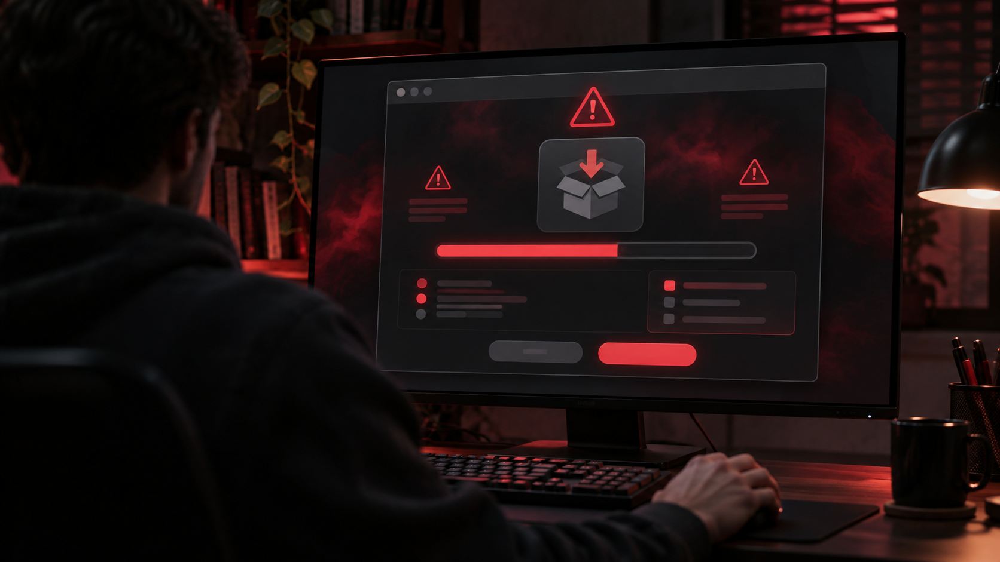

SECURITY NOTES / CASE 001
Untrusted installer.
출처가 불분명한 프로그램을 설치하려는 순간의 화면을 기록했습니다.

경고 표시와 진행 막대만으로는 설치 파일의 출처나 실제 동작을 확인할 수 없습니다. 화면에 보이는 정보와 파일에 포함된 정보가 다를 수 있다는 점을 살펴보기 위한 기록입니다.
SECURITY NOTES / CASE 001
출처가 불분명한 프로그램을 설치하려는 순간의 화면을 기록했습니다.

경고 표시와 진행 막대만으로는 설치 파일의 출처나 실제 동작을 확인할 수 없습니다. 화면에 보이는 정보와 파일에 포함된 정보가 다를 수 있다는 점을 살펴보기 위한 기록입니다.